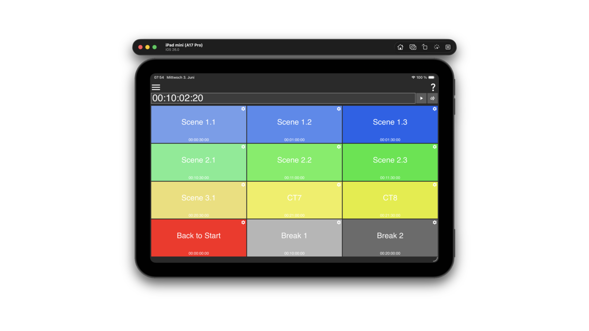

Jumpy
A lightweight MIDI Time Code utility. Set a timecode position, trigger it instantly, or run it continuously — and jump to any of twelve preset positions via coloured buttons, OSC, or MIDI.

What it does
Jumpy sends MIDI Full Frame (MTC) SysEx messages to
a selected MIDI output device. The message encodes a timecode position
in hh:mm:ss:ff format together with the active frame rate,
as defined by the MIDI Time Code specification.
There are three ways to produce an MTC output:
- Manual trigger — type or edit a timecode in the editor field and press the trigger button to send it once.
- Running timecode — press play to start a timer that advances the timecode at the selected frame rate and continuously sends MTC messages.
- Preset buttons — a 4×3 grid of coloured trigger buttons, each holding a named timecode position. Click a button to jump to its stored position immediately.
Preset buttons can also be activated externally via OSC address patterns or MIDI command assignments, making Jumpy usable as a remote-controlled timecode source.
Custom trigger buttons
Each of the twelve trigger slots is independently configurable with:
- Name — shown as the button label.
- Colour — background colour for quick visual identification.
- Timecode — the target
hh:mm:ss:ffposition to jump to on activation. - OSC trigger — a custom OSC address pattern; any matching incoming message fires the button.
- MIDI trigger — a MIDI command assignment learnt via the built-in MIDI learner.
Tap or click an unconfigured slot to open its settings panel. Configured buttons are saved to the application configuration and restored on the next launch.
OSC control
Jumpy listens on a configurable UDP port (default 53000) for two address families:
| OSC address | Effect |
|---|---|
/Jumpy/TS hh:mm:ss:ff |
Sets and transmits the specified timecode position. |
| Per-button custom pattern | Activates the matching preset trigger button. |
The OSC port can be changed at any time from the options menu without restarting the application.
MIDI
Jumpy opens a single MIDI output device to send MTC messages and optionally a MIDI input device to receive button-trigger commands. Both input and output devices are selected from the options menu and the choice is saved in the configuration.
Supported frame rates: 24 fps, 25 fps, 29.97 fps, 30 fps — selectable from the options menu.
Getting started
- Open the options menu (≡) and choose a MIDI output device from the MIDI output device submenu.
- Select the frame rate that matches your session under Framerate.
- Type a timecode into the editor field (format
hh:mm:ss:ff) and press the trigger button (▶) to send it once, or press the play button (▷) to start a running timecode. - To configure a preset button, tap any grey slot and fill in its name, colour, timecode and optional OSC/MIDI trigger in the settings panel.
Full documentation including the iOS MIDI network session setup is in the README.
Platform support
| Platform | Notes |
|---|---|
| macOS | Desktop app; resizable window. |
| Windows | Desktop app; resizable window. |
| iOS / iPadOS | Native app; full-screen, screen saver disabled. TestFlight beta available. |
Get it
Binary packages for macOS and Windows are attached to every GitHub release. The iOS TestFlight beta is linked from the repository page.
Source code, build scripts and full technical documentation are in the GitHub repository. Code-level API documentation is in the Doxygen reference.